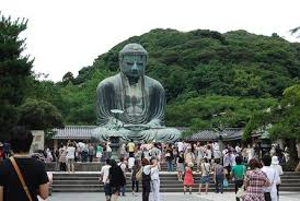

北海道
北海道と言えば、どこまでも続くまっすぐな道路、そして広大な大地をイメージする方が多いのではないでしょうか。そのほかには、サケ・ヒグマ・キタキツネなどを連想する人もいることでしょう。
愛知県
愛知県には数多くの城跡が存在します。現在では観光地として開放されているところが多く、外国の観光客にも人気の観光スポットとなっており、周辺地域の収益にも大きく貢献しています。
| 写真 | 住所 | |
|---|---|---|
| 名古屋城 | 名古屋市中区本丸1-1 | |
| 小牧山城 | 小牧市堀の内1丁目 | |
| 犬山城 | 犬山市犬山北古券65-2 | |
 |
清洲城 | 清須市朝日城屋敷1-1 |
 |
岡崎城 | 岡崎市康生町561-1番地 |
沖縄県
沖縄の魅力は美しい海だけではありません。島ごとに育まれてきた特有の文化や、そこでしか味わえない、ゆったりとした時間の流れも観光客を惹きつける大きな魅力となっています。沖縄には多くの島がありますが、比較的大きな島としては次の4つが挙げられます。
- 石垣島
- 西表島
- 宮古島
- 久米島
神奈川県
神奈川県は東京の真南に位置し、太平洋に面しています。県庁所在地は県内東部にある横浜市で、市内には屋台やレストランが連なる大きな中華街、伝統的な造園術が凝縮された三渓園、屋上庭園のある超高層のランドマーク タワーがあります。大さん橋埠頭には、水辺の遊歩道が整備されていて、ショップが立ち並びます。県内北東部には、川崎大師で知られる川崎市があります。
| 写真 | あらすじ | |
|---|---|---|
| 横浜・八景島シーパラダイス | 神奈川県横浜市金沢区八景島にある水族館・アトラクション・ショッピングモール・ホテル・マリーナなどで構成した複合型遊園地である。 | |
| 江の島 | 江の島は神奈川県の湘南海岸に浮かぶ小島で、音楽の神とされる弁財天の像を祀った江島神社で知られています。また、江の島アイランドスパ（えのすぱ）や、19 世紀のイギリス式庭園サムエル コッキング苑、江の島シーキャンドル（展望灯台）もあります。岩屋の手前には潮だまりがあり、洞窟は仏像が安置されています。本土側には人気のビーチがあり、島を一望できます。 | |
| 大涌谷 | 大涌谷は、神奈川県箱根町にある箱根火山の火山性地すべりによる崩壊地形。箱根火山の中央火口丘である冠ヶ岳の標高800mから1000mの北側斜面にあり、地熱地帯で活発な噴気地帯でもある。箱根火山に多数有る噴気地帯の中では最大規模のものである。 | |
|  | 高徳院 | 高徳院は、神奈川県鎌倉市長谷にある浄土宗の寺院。本尊は「鎌倉大仏」「長谷の大仏」として知られる阿弥陀如来像。山号は大異山。詳しくは大異山高徳院清浄泉寺という。開基と開山はともに不詳である。 2004年2月27日、境内一帯が「鎌倉大仏殿跡」の名称で国の史跡に指定された。 |
| 横浜中華街 | 横浜中華街は、神奈川県横浜市中区山下町一帯に所在するチャイナタウンである。1955年以前は唐人町や南京町と呼ばれていた。華僑の出身地は広東省が比較的多いが、中国各地に分散している。上海路、中山路、福建路など、地名を冠した路地が交差しており、各路地には、当該地の出身者が多い。 | |
| 小田原城 | 小田原城は、神奈川県小田原市にあった、戦国時代から江戸時代にかけての日本の城で、北条氏の本拠地として有名である。江戸時代には小田原藩の藩庁があった。城跡は国の史跡に指定されている | |